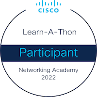

Sobre mim
Sou desenvolvedor com experiência em frontend e backend, iniciei alguns projetos próprios de implantação de aplicação sem servidor em nuvem e aplicação de serviços de agendamento, atuando desde 2023 em desenvolvimento web de grande escala com java e angular com as principais nuvens públicas e privadas do mercado, trabalhando em uma plataforma multcloud que integra essas nuvens para melhor gerenciamentos de suas contas, estou sempre comprometido com as melhores práticas de desenvolvimento para garantir que o código seja limpo, escalável e de fácil manutenção. Minha abordagem é focada em criar soluções eficientes e robustas, contribuindo em projetos que facilitem a vida das pessoas.
Experiências
DESENVOLVEDOR FULLSTACK JAVA | ANGULAR
Responsável por fazer manutenção na aplicação sustentação com java 8, migração para microsserviços com java 17 e 21, graças a nossa equipe estamos criando projetos escaláveis com mais isolamento e testes mais aprimorados, chegando a margem de mais de 30% de código testado. Na parte de frontend usamos angularjs no qual também faço manutençao, mas também já está acontecendo a migração para angular 18.
O foco do time é fazer manutenção no código legado e migrar tudo para microsserviços para usar tecnologias atualizadas e fazer código de fácil manutenção, isolando cada client de nuvem no seu respectivo microsserviço para isolar os problemas e aprimorar cada vez mais de forma mais simples.
Nicho: Plataforma de gerenciamento de infraestrutura multcloud com as principais nuvens públicas Aws, azure, google entre outras e principais nuvens privadas vmware, hyper-v entre outras. Nosso foco é promover governança para gerenciar múltiplas nuvens em um só lugar.
Meta: Ser o maior integrador de nuvens do mundo, promovendo governança e uma plataforma de gerenciamento de nuvens com a melhor qualidade do mercado.
Desafios: Migrar toda aplicação sustentação para microsserviços, melhorar os níveis governança, expandir a plataforma para mais países, manter o bom funcionamento da plataforma.
Principais tecnologias: Java, Angular, Docker, RabbitMQ, Git, Gitlab, MySQL, PostgreSQL, jUnit e Mockito cloud services.
DESENVOLVEDOR FULLSTACK JAVA | ANGULAR
Ustore é uma plataforma integradora de serviços de
nuvem, que permite administrar múltiplas nuvens como AWS, Azure, Google, entre outras. UCloud está em migração de monolítico para
microsserviços. Trabalho para manter o bom funcionamento dos sistemas do UCloud em Java 8, 17 e 21 e de sua transição.
Utilizamos também de metodologias ágeis, como Scrum e Kanban para tornar o processo mais eficiente.
Principais tecnologias utilizadas: AngularJS, Java, Spring Boot, Maven, Docker, RabbitMQ, Git, Gitlab, MySQL, jUnit e Mockito.
Entre os principais recursos do sistema estão:
- Portal administrador para gestão multiplas nuvens
- Gerenciamento de multiplas contas em um só lugar
- Governança centralizada
- Catalogo de serviços
- Dashboards
Principais tecnologias utilizadas: Java para a API Rest, Banco de dados PostgreSQL, Docker, Git e Gitlab, Spring Framework, Spring Boot, Spring Web MVC, Spring Data JPA e Spring Security JWT, Swagger, EC2, Bucket S3 e RDS da AWS.
DESENVOLVEDOR FULLSTACK — XMOB.
- Desenvolver aplicação Servless.
Principais tecnologias usadas: Aws, Lambda functions, Cognito, Api Gateway, Java, Spring boot, maven , Angular, DynamoDB, S3.
Educação
ENGENHARIA DE SOFTWARE — ANHANGUERA
Iniciado em 2025
INFORMATICA PARA INTERNET — IFPE
Iniciado em 2019, Terminado em 2023
Certificação / Certificados
